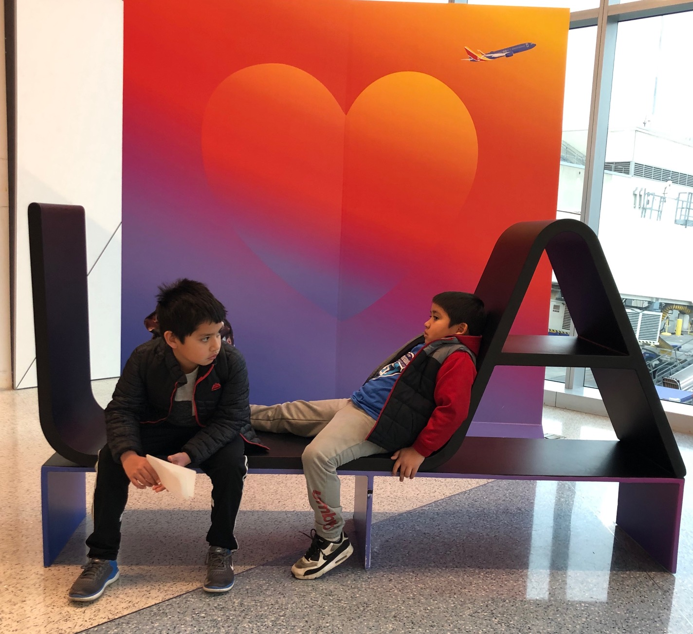

Los Angeles Airport (LAX)
Work moved us from LA to KC in late 2016. We return to California a few times a year to visit family and friends. Airports are gateways to new and familiar places, one of them being our first home in LA to our current home in KC. I can almost feel the beat at which people move about at LAX as they head torwards their destinations. Fingers are always crossed that the traffic fairies will be good.

Daniel K. Inouye International Airport aka Honolulu International Airport (HNL)
We were fortunate to have taken part in a destination wedding this summer. My cousin's nuptials brought us to the island of Oahu. Palm trees and blue sky were in view as we were landing. We immediately felt at ease once we landed on the island - it was the complete opposite experience of the mad rush to the airport 7 hours earlier in the day.
Harry Reid International Airport (LAS)
I still remember the sound of a winning lost machine when they use to dispense coins. Winnings and losses happen digitally now.

Long Beach Airpot(LGB)
We always have a positive travel experience when flying to or from this airport. Boarding the plane on the tarmac makes for a unique experience.

LaGuardia Airport(LGA)
I haven't traveled to NY in almost 20 years. I had mentally prepared myself of a little chaos at arrival, but it was anything but that; it was easy to navigate our way through this place that was new to all of us.


The original airport isn't stunning but I appreciate its simplicity, which will soon be replaced by the bigger and shinier new airport set to open next year. I always boast about how easy it is to travel and and out of this airport.